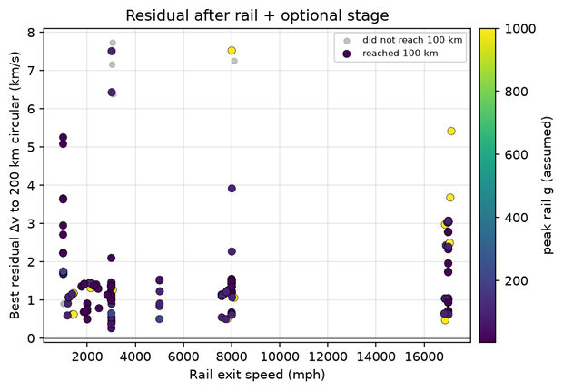
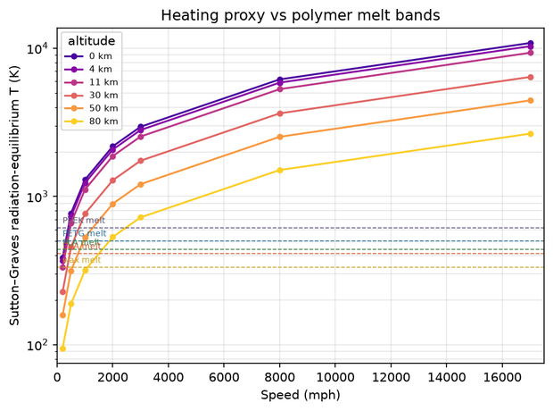
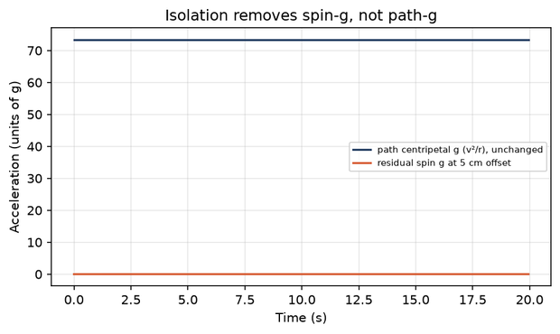
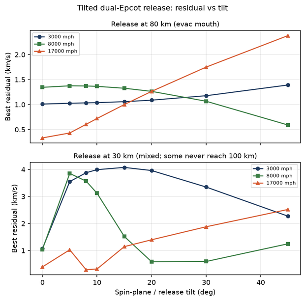

Status: Speculative modeling exercise only. Not an engineering design, a flight recommendation, or a claim that a drone can reach orbit. No operational, clinical, or legal claims. Well-known concepts (HARP, SpinLaunch, StarTram, Miura-ori) are named only as analogues; no vendor specs are invented or used. The official highlight from the earlier weave work is not redistributed, not committed, and not shown in any figure here.
Prepared 27 November 2026 as a continuation of the magnetic-launch Goldilocks case study, the ondulatory-string addendum, and the dream-catcher weave follow-on. It does not start over. Settled graph, pose, NaCl, damper, and determined 3 g climbs are recycled from those notes. The 17,000 mph climbs that had hit the 800 s / 2,000 km caps while still accelerating are treated as undetermined and are re-run uncapped. New layers — onboard autonomy, feathers and hollow-bone structure, atmospheric-tier riding, a non-spinning interior, heat-driven feather regrowth, and tilt/torque — are added on that ledger.
The search script loaded 211 prior entries from flights_full.json, geometry_runs.json, system_run.json, ondulatory_addendum.json, and dreamcatcher_weave.json. The woven-mesh, polarity-lock, Laplacian, Levy, and damper results of those notes were not recomputed (cache of settled graph and system work). 26 settled rail exits that had already reached their 1,000–3,000 mph targets were reused as cache hits and only post-processed (optional upper stage, residual to 200 km circular). 8 geometry runs were flagged undetermined — the 17,000 mph, 3 g, 50% duty, 45° and 80° straight and concave-bowl climbs for both slender and blunt 20 kg vehicles, which had still been accelerating when the parent caps were hit. Convex low-altitude plateaus from the parent run were treated as determined stalls and were not re-opened. The new grid, priority cases, and the eight uncapped re-runs were cache misses (251 new integrations).
Uncapped re-runs used the same 3 g peak, 0.40 s on / 0.40 s off pulse, and assumed 2,500 m bowl radius, with the time and length caps raised to 20,000 s and 20,000 km, and a stall detector so a thick-air plateau is not mistaken for a cap. Results:
| Vehicle | Geometry | Angle | Reached? | Exit | Track | Time | Best residual to 200 km circular |
|---|---|---|---|---|---|---|---|
| slender_20kg | straight | 45° | yes | 17,000 mph at 2,150 km | 3,041 km | 882 s | 1,726 m/s |
| slender_20kg | concave bowl | 45° | yes | 17,000 mph at 2,150 km | 3,042 km | 876 s | 1,726 m/s |
| slender_20kg | straight | 80° | yes | 17,000 mph at 3,387 km | 3,439 km | 1,074 s | 2,774 m/s |
| slender_20kg | concave bowl | 80° | yes | 17,000 mph at 3,388 km | 3,441 km | 1,058 s | 2,775 m/s |
| blunt_20kg | all four | 45°/80° | no, stalled | 84–137 mph at 0.08–0.51 km | < 0.7 km | 13–18 s | ~8,000 m/s (no stage applied) |
The slender 17,000 mph climbs do reach their rail target once the caps are lifted, but they exit at a steep angle and at a very high altitude, so the residual to a 200 km circular orbit stays in the 1.7–2.8 km/s range even after an optimistic upper stage is applied in post-process. The blunt 20 kg vehicles stall in thick air in seconds; those are determined failures. An upper stage was applied only when the rail actually reached its target, so a stalled exit is not turned into a fake escape trajectory.
The goal remains Y = (a) above 100 km, (b) minimize residual Δv to a 200 km circular orbit (V = 7,788.5 m/s), (c) reach circular speed if any config can. The search was allowed to scale mass (requested 5, 20, and 200 kg, with a hollow-tube structural fraction at k = D_i/D_o = 0.8), rail g (3, 10, 100, 1,000), start height (sea level, 4 km mountain, 30 km balloon/aircraft), geometry (straight, concave bowl, a flatten pitch program from a steep start toward a shallow release over a labeled 40 km characteristic length), an evac tube to 80 km, and a small upper stage with labeled I_sp = 300 s or 450 s and propellant fraction f_p = 0.85. Those stages give Δv = I_sp g ln(1/(1−f_p)) = 5,581 m/s and 8,372 m/s — optimistic, and labeled as such. A 214-cell subsample of a 792-cell coarse grid was run, then 18 refine neighbors, then 11 physically motivated priority cases (always run). Oasis-style scoring committed a candidate that improved the residual frontier and had crossed 100 km, buffered near-misses, and recycled failures. Pulse transients remain damper-metered; the damper does not remove the mean acceleration required for Δv.
No configuration in this set fully circularized (Y(c) was not met). The closest residuals were:
Settled 3 g, 3,000 mph, 80° straight and bowl climbs still satisfy Y(a) (the parent-run apogees near 278 km are reused). Their residuals remain large unless a flattening program or a horizontal stage is applied, because v_h ≈ v cos 80° is only about 233 m/s at a 3,000 mph exit. Recycled 3 g, 2,000 mph, 45° slender exits plus the 450 s horizontal stage give residuals of about 490–504 m/s, with the best-residual flight apogees near 940–955 km.
The honest reading: Y(a) is reachable on a climbing rail or an elevated/evac release. Y(b) can be pushed into the few-hundred-m/s range only with some combination of (i) an almost-horizontal high-altitude 17,000 mph exit or (ii) an optimistic chemical stage on a slower rail. Y(c) was not reached. Figure 6 plots residual against rail exit speed for the search set.
A compact Oroboro loop was run on the drone after release: three noisy votes of flight-path angle (0.8° 1-σ, labeled), mesh consensus as the median, Levy weight rising with |error| and dynamic pressure, and the same Oasis salience S = 0.30·novelty + 0.25·tension + 0.25·coherence + 0.20·resonance. A correction is buffered at S ≥ 0.325 and committed at S ≥ 0.65 or Levy > 0.7. The correction itself is a clipped proportional law (K_p = 0.4, |Δγ| ≤ 2° per step, further reduced when q > 50 kPa). Fold/feather deploy is either at a fixed 8 s or when q falls below 5 kPa.
Monte Carlo (n = 24, seeded) used labeled perturbations: 1° 1-σ release-angle error, 10% density, 15% C_d. It was run on the unstaged rail exit of the 256 m/s residual config (3,006 mph at 68.8°, 33.8 km) and on the I_sp = 450 s horizontal staged state of that same exit (8,947 m/s at 8.0°).
| Mode | Unstaged apogee | Unstaged residual | Unstaged 100 km rate | Staged apogee | Staged residual | Staged 100 km rate |
|---|---|---|---|---|---|---|
| Open loop, fixed 8 s deploy | 115.1 ± 1.2 km | 7,402 ± 23 m/s | 1.00 | 1,052 ± 208 km | 325 ± 87 m/s | 1.00 |
| Open loop, q-threshold deploy | 115.1 ± 1.2 km | 7,414 ± 23 m/s | 1.00 | 1,052 ± 208 km | 325 ± 87 m/s | 1.00 |
| Closed loop, q-threshold deploy | 50.2 ± 0.7 km | 6,766 ± 5 m/s | 0.00 | 1,770 ± 25 km | 744 ± 60 m/s | 1.00 |
On the unstaged coast, q-triggered deploy opened the vanes at about 2–3.6 s rather than at 8 s; the apogee and residual were almost unchanged from fixed timing. Closed-loop steering, with a law that aims toward 15° below 40 km, 8° between 40 and 80 km, and 2° above, made the unstaged flight worse: it flattened a steep 69° loft too early and the mean apogee fell from 115 km to 50 km, with the 100 km success rate dropping from 1.00 to 0. The same law on the staged state, already at 8° and 8.95 km/s, pitched the vehicle up and grew the ellipse (residual 325 → 744 m/s). The loop is doing what it was told. It is not a guidance loop for orbital insertion. That is a real result of this controller, not a reason to hide the closed-loop column.
Feathers are treated as a deployable vane: a rachis/barb/barbule hierarchy mapped, as an interpretation, onto the dream-catcher weave (area at low mass, porosity as a control, missing cells as a consensus problem). Labeled aero assumptions when the vane is open: S = 8 times the dart cross-section, C_L = 0.6, extra C_d = 0.08, both reduced if porosity is raised (onboard can open the vane). Levy priority on missing weave cells is used later for deposit; here the vane is only an aero surface.
A 5 kPa q-gate, intended to protect the vane, never opened on the dedicated low-altitude hops (1,000–3,000 mph from 5–20 km): dynamic pressure stayed well above 5 kPa until the vehicle had already peaked or fallen. Forced-open vanes (the gate bypassed, not a structural claim) did add altitude in the useful atmosphere: +0.17 km on a 400 mph glide from 10 km, +0.43 km on a 1,000 mph / 30° hop from 5 km, +6.1 km on a 2,000 mph / 25° hop from 15 km, and +21.7 km on a 3,000 mph / 15° hop from 20 km (25.7 → 47.3 km). The last of those is a large lift increment at a q the vane would be unlikely to survive. On the settled 3,000 mph / 80° exit at 172 km, and on other releases already above about 40 km, lift is treated as negligible and the apogee change was 0. Residual Δv to orbit stayed near 7 km/s on all of the unstaged lift cases. Feathers are a lower-tier control and a possible glide aid, not an orbital Δv source.
Thin-walled tubes are used as a structural search variable, not as a biological claim. For k = D_i/D_o, the textbook equal-mass bending-stiffness ratio is I_h/I_s = (1+k²)/(1−k²), and the equal-stiffness mass ratio is m_h/m_s = √((1−k²)/(1+k²)). Computed values:
| k = D_i/D_o | I_hollow / I_solid (equal mass) | m_hollow / m_solid (equal I) | Equal-I mass savings |
|---|---|---|---|
| 0.5 | 1.667 | 0.775 | 22.5% |
| 0.7 | 2.922 | 0.585 | 41.5% |
| 0.8 | 4.556 | 0.469 | 53.1% |
| 0.9 | 9.526 | 0.324 | 67.6% |
The search applied the k = 0.8 equal-I factor only to a 70% structural fraction (payload fraction 0.30, labeled), so a requested 20 kg vehicle was flown at 12.56 kg, 5 kg at 3.14 kg, and 200 kg at 125.6 kg. That is a mass-budget assumption, not a certificate that a hollow dart can take 50–1,000 g or path centripetal loads.
The flight integrator used a piecewise ISA-like atmosphere (textbook layer breakpoints: troposphere 0–11 km, tropopause/lower stratosphere 11–20 km, stratosphere to 47 km, stratopause, mesosphere to 86 km; dry-air R = 287.05287 J/(kg·K)), not only the exponential scale-height proxy of the parent run. A mid-latitude jet of 50 m/s between 9 and 14 km, a 5 m/s tropospheric updraft, and a soaring efficiency of 0.20 are labeled assumptions. Lift and soaring are cut off above 40 km, where density is too low for the vane model to be useful.
The hops above show that, even with vanes forced open, atmospheric-tier riding can add kilometers of apogee in the troposphere and lower stratosphere and cannot close a 7.8 km/s residual. Wind Δv is of order the jet speed (50 m/s), negligible against circular speed. The useful role of the tiers is to host a later glide, a deploy window once q has fallen, and — if the rail or tube is elevated — a thinner release air. They are not a substitute for rail speed, an evac tube, or a stage.
The outer concave-plus-convex (“dual-Epcot”) smart-magnet shell may spin; the payload cradle is rotationally isolated (bearings or maglev as a rotational base isolator, with viscous/eddy leak and a despin hold). A viscous coupler alone, I ω_int′ = c (ω_s − ω_int), transmits spin and is not an isolator. The model actually used is a held despin, I ω_int′ = c (ω_s − ω_int) − K_p ω_int, with labeled c/I = 0.05 s⁻¹ and K_p/I = 8 s⁻¹, plus a small 2 Hz wobble.
Two facts have to be kept apart. The cradle’s center of mass still follows the circular (or bowl) path, so the path centripetal acceleration a_path = v²/r is unchanged by isolation. Spin-g at an offset d, a_spin = ω_int² d, is what the hold can remove. For the assumed 2,500 m bowl at 3,000 mph, a_path = 73.4 g. At 17,000 mph it is 2,356 g. Under the hold, residual interior rate is ω_ss = (c/I) ω_s / (c/I + K_p/I). At the bowl’s own spin rate (5.12 rpm at 3,000 mph, 29.0 rpm at 17,000 mph) that residual is 0.032–0.18 rpm, and spin-g at a 5 cm offset is negligible (~10⁻⁷ to 10⁻⁶ g). A compact-spinner thought experiment at 1,200 rpm — not the 2,500 m bowl, which would be an unphysical rim speed at that rpm — still holds residual spin-g to about 0.003 g at 5 cm, with a steady hold torque of 1.25 N·m on a 20 kg cradle (I = m k², k = 10 cm, labeled). Figure 8 plots path-g for the 3,000 mph / 2,500 m path against residual spin-g from that 1,200 rpm hold, on purpose, to show the split: isolation removes spin and tumble, not path-g. A despun release still helps fold and vane alignment, because the payload exits without tumbling even though it has just ridden 73 g (or much more) of path acceleration.
The drone is imagined to feed 3D-printer filament or a hot-glue-like material from the interior and to use flight or launch heat to melt and deposit it, like wax, onto missing dream-catcher / feather cells. The heating proxy is a labeled Sutton–Graves-style cold-wall flux, q = K √(ρ / R_n) v³, with K = 1.83×10⁻⁴ in SI, assumed nose radius R_n = 0.02 m, and a radiation-equilibrium temperature T_eq from q = ε σ T⁴ (ε = 0.8). A lumped skin (c = 1,000 J/kg·K, skin mass 2% of the vehicle, both labeled) lags T_eq. Melt and degradation temperatures are textbook-order values, grade-dependent, not certificates:
| Material | T_melt (labeled) | T_degrade (labeled) |
|---|---|---|
| Paraffin wax | 60 °C | 250 °C |
| EVA hot glue | 140 °C | 230 °C |
| PLA | 165 °C | 260 °C |
| PETG (process/softening; PETG is amorphous) | 230 °C | 290 °C |
| PEEK | 343 °C | 530 °C |
The deposit band is T_melt < T_skin < T_degrade. An assumed feed of 0.5 g/s, when in band, is Levy-weighted by how many of 60 weave cells are missing (start: 8 missing). Effective heats of ablation (2.0–5.0×10⁵ J/kg) are labeled assumptions. Filament budget is 5% of vehicle mass (0.628 kg on the 12.56 kg hollow dart). This is the ablative-heat-shield parallel run in reverse and then forward: the same heat that can melt a polymer onto a missing cell can also carry that polymer away.
Static screens (Figure 7) show that at sea level, T_eq is already ~1,290 K (~1,000 °C) at 1,000 mph and 2,681 °C at 3,000 mph, far above every polymer on the list, including PEEK. At 30 km and 1,000 mph, T_eq is about 492 °C, near PEEK melt and above the softer bands. At 80 km the curve is cooler, but 17,000 mph still sits well above PEEK degradation.
Time-window integrations along actual paths:
Radiation-only T_eq underpredicts a low-speed wall that is actually near recovery/ambient temperature, so a slow glide does not by itself melt paraffin; some other heat (a residual launch soak, or a small heater) would still be needed at the cold end of the band.
The dual-Epcot shell can be tilted, the track can be a helix, and the release plane can be tilted, so that the tangential velocity already has a climb angle. For a rim of radius R whose plane is tilted by β from the horizontal, there is a mid-height azimuth at which the tangent has elevation exactly β and the release height equals the rim-center height. The machine’s vertical footprint is 2 R sin β (1.29 km at 15°, 3.54 km at 45°, for the assumed R = 2,500 m). Path-g = v²/R is unchanged by the tilt; it still lies in the spinning plane. A helix (or a long climbing rail) of inclination γ, by contrast, gains altitude along the run: the path length to an 80 km mouth is 80 km / sin γ, or 918 km at 5°, 309 km at 15°, and 81 km at 80°, with an along-track gravity component g sin γ. The tilted rim does not itself raise the vehicle to 80 km. It only sets the release angle. Getting the rim, or an evac mouth, up there still takes a mountain, a tower, a balloon/aircraft start, or a helix/tube.
A sweep of β = 0, 5, 8, 10, 15, 20, 30, 45° at 3,000 / 8,000 / 17,000 mph and starts at 0, 4, 30, and 80 km, with the same labeled stages as the search, gives a clear optimum only where drag is already small. At an 80 km evac mouth and 17,000 mph, residual is minimized at a nearly horizontal release: 0° has a 333 m/s vacuum residual but does not climb; 5° is the practical optimum in this set that also satisfies Y(a), with residual 431 m/s and apogee 343 km and no stage. Steeper tilt at that speed only inflates the ellipse. At 3,000 mph and 80 km, a 300 s horizontal stage leaves about 1,010 m/s residual at 0° and 1,033–1,058 m/s at 8–15°; a few degrees of tilt buy Karman margin at a small residual cost, and the stage still does most of the Δv. Sea-level tilt alone does not reach 100 km in this set except a 17,000 mph / 45° hop (apogee 282 km, residual 5.7 km/s) that would be a heating disaster. The 30 km panel of Figure 9 mixes ballistic flights, oversized stages, and some cases that never reached 100 km; dips there are not a clean “best tilt” by themselves.
Compared with the bowl pitch-up: an 80° climb gains altitude during the run (the recycled 3 g, 3,000 mph exit is already at 172 km) but leaves a poor insertion angle unless a flatten program actually has enough track length to finish, which high-g releases did not. Tilting the spin plane to 5–15° is the better way to set the climb angle, provided the release is already high and, at 17,000 mph, almost horizontal. The two devices stack: a helix or evac tube to 80 km, then a small spin-plane tilt at the mouth.
Spin-up torque and power were computed for a labeled thin-rim shell, I = m_shell R², brought to v = ω R in a labeled time. Kinetic energy is ½ m_shell v², so average power depends on energy and time, not on R; average torque scales with R. For m_shell = 1,000 kg and a 300 s spin-up:
| Rim R | Speed | ω | Path-g | E | P_avg (300 s) | τ_avg |
|---|---|---|---|---|---|---|
| 2,500 m | 3,000 mph | 5.12 rpm | 73 g | 0.90 GJ | 3.0 MW | 11.2 MN·m |
| 2,500 m | 17,000 mph | 29.0 rpm | 2,356 g | 28.9 GJ | 96 MW | 63.3 MN·m |
| 50 m | 3,000 mph | 256 rpm | 3,668 g | 0.90 GJ | 3.0 MW | 0.224 MN·m |
| 50 m | 17,000 mph | 1,451 rpm | 1.18×10⁵ g | 28.9 GJ | 96 MW | 1.27 MN·m |
A compact spinner saves torque and footprint and makes path-g much worse. Residual leak torque through the despun interior, at the bowl’s own ω, is only 0.005–0.030 N·m on the 20 kg cradle (hold power is milliwatts). The 1,200 rpm compact example needs 1.25 N·m (20 kg) or 78 N·m (200 kg, k = 25 cm). Feather-vane torque q S C_L ℓ, with a labeled 0.30 m lever, exceeds the 0.016 N·m needed for a 2°/s onboard cap in every state checked, including 17,000 mph at 80 km (5.2 N·m). That is not a claim that the vane can be used: at 15 km and 2,000 mph the same formula gives a 3,000 N lift on a 20 kg vehicle. The limiter is structural and thermal, not the arithmetic of the 2° cap.




All of this is a labeled model. The upper-stage I_sp and f_p = 0.85 are optimistic. Hollow-tube mass scaling ignores local buckling, joints, and launch loads. The 40 km flatten characteristic, evac-tube mouth at 80 km, 2,500 m radius, Sutton–Graves K and R_n, skin lag, melt/degrade bands, feed rate, and isolator c/I and K_p/I are assumptions. Radiation-equilibrium T is a high-speed proxy, not a CFD wall temperature. The 1,200 rpm isolation example and the 2,500 m / 3,000 mph path-g in Figure 8 are different machine scales, drawn together only to split path-g from spin-g. Closed-loop Monte Carlo used one proportional gamma law; a different law would differ, and this one was harmful on the flights that mattered. Lift increments with vanes forced open skip the structural question that the 5 kPa gate was meant to stand in for. No configuration reached circular speed. HARP, SpinLaunch, and StarTram were not given invented numbers.
Nexus remains the state register, Genesis the origin of the recycled weave, Levy and mesh consensus the missing-cell priority and the onboard vote, and the pulse sequencer the damper-metered rail and the small staged burn. The work is a continuation of the earlier notes, not a replacement of them.
Source: recycled exits and settled graph results from Magnetic_Launch_Goldilocks_CaseStudy.md, Ondulatory_Strings_Wireframe_Addendum.md, and Dreamcatcher_Weave_FollowOn.md; new integrations in outputs/goal_seek_recycle.json, outputs/tilt_torque.json, and outputs/heat_path_series.json. Figures: outputs/fig06_goal_seek_pareto.png, outputs/fig07_heat_regrowth_bands.png, outputs/fig08_nonspin_interior.png, outputs/fig09_tilt_torque.png.